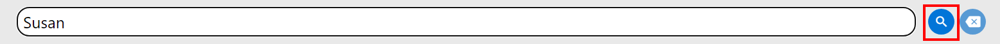
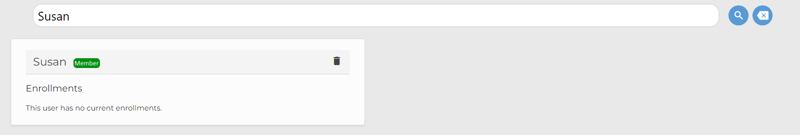
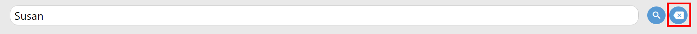

Viewing Users and their Enrollments¶
As a Staff member, you will likely need to periodically check on MyMCA users and their enrollments. This tutorial will teach you how to utilize the User viewing functionality of the MyMCA application.
Log into your account and click the “Users” link at the top of the application.

You will be greeted with a list of users, their credentials, and their current enrollments.
You can also search for users by name by entering a term in the search bar and clicking the “Search” button.
 To clear your search, simply hit the “Clear” button.
Please ensure that the user information is consistent with the records of your assigned users. If information looks out of place, please contact your senior Staff for further instructions.